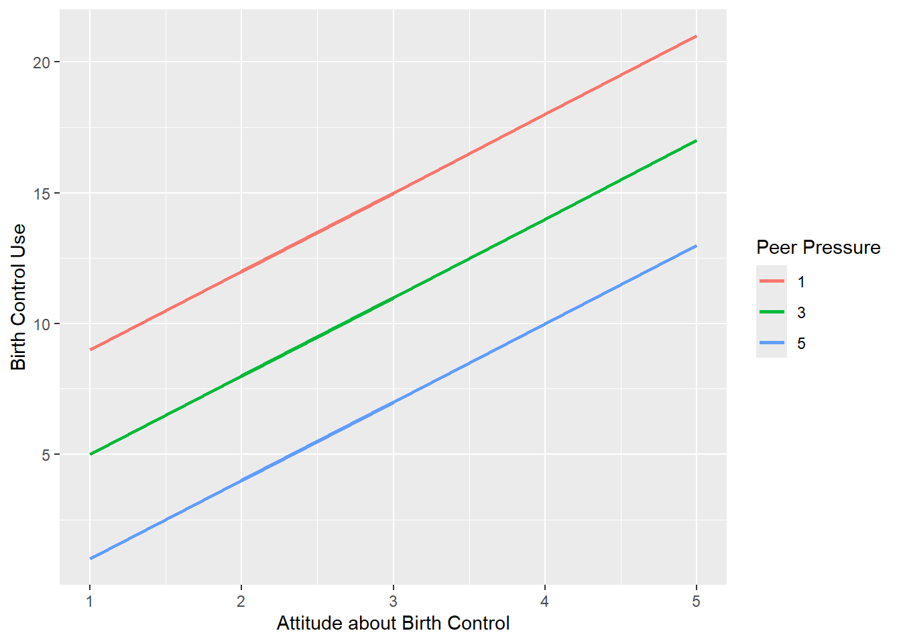
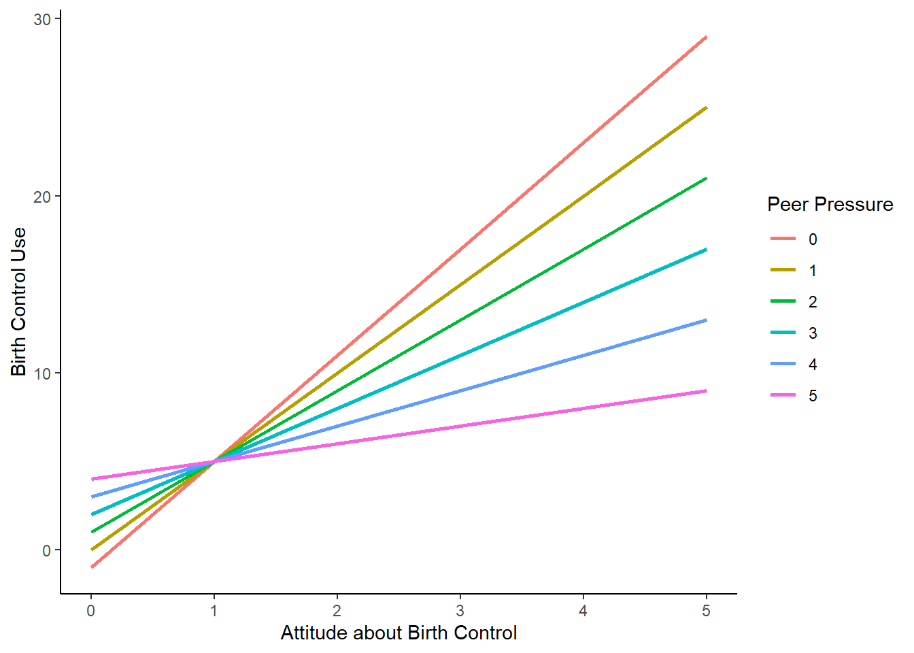
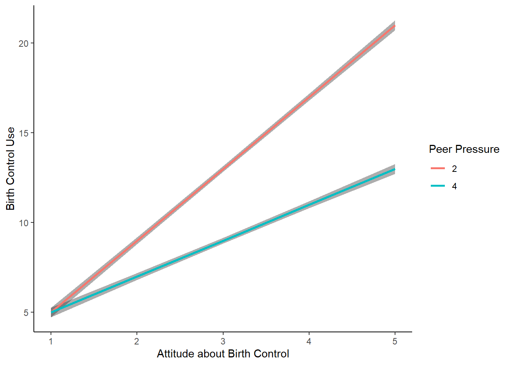

10Inferences about Two Continuous Predictors and their Interaction
10.1 Interactive Models: Two Quantitative Variables
Example:
Effect of positive attitudes (1-5) about birth control and peer pressure to not use birth control (1-5) on intention to use birth control (0-30) among sexually active female adolescents.
data |>pivot_longer(att:bc, names_to ="var") |>group_by(var) |>summarise(mean =mean(value), sd =sd(value), min =min(value), max =max(value))
# A tibble: 3 × 5
var mean sd min max
<chr> <dbl> <dbl> <dbl> <dbl>
1 att 3 1.42 1 5
2 bc 11 5.68 3 27
3 pp 3 1.42 1 5
Question: If you regressed BC on Att and PP in two separate linear models, what can you tell me about these two models based on the correlations below?
Code
data |>select(-subid) |>cor()
att pp bc
att 1.00 0.0 0.75
pp 0.00 1.0 -0.50
bc 0.75 -0.5 1.00
Regression coefficient for Att will be positive. Regression coefficient for PP will be negative. \(R^2\) will be bigger for Att model (\(R^2\) = .56) than for PP model (\(R^2\) = .25)
Code
m_att <-lm (bc ~ att, data = data)broom::tidy(m_att)
# A tibble: 2 × 5
term estimate std.error statistic p.value
<chr> <dbl> <dbl> <dbl> <dbl>
1 (Intercept) 2.00 0.791 2.53 1.27e- 2
2 att 3.00 0.239 12.6 7.92e-24
Question: Based on the correlations, what can you tell me about the model including both Att and PP as regressors?
Code
data |>select(-subid) |>cor()
att pp bc
att 1.00 0.0 0.75
pp 0.00 1.0 -0.50
bc 0.75 -0.5 1.00
The regression coefficients for Att and PP will match the coefficients from their respective bivariate models b/c Att and PP are fully orthogonal (uncorrelated). PP and Att each predict fully unique variance in BC.
The \(R^2\) for the additive model will be equal to the sum of the \(R^2\)s from the two bivariate models, again b/c Att and PP are orthogonal.
Question: What about \(\eta_p^2\) for Att (or PP) in the 1 predictor model vs. the 2 predictor model? Specify the augmented and compact models to test Att for 1 and 2 predictor approaches. Specify the formula for \(\eta_p^2\).
Numerator is same for the both 1 and 2 predictor tests of Att.
Denominator is smaller for 2 predictor test.
Therefore, \(\eta_p^2\) for Att is bigger in 2 predictor model. Att produces a bigger proportional reduction in error.
Question: What about \(\Delta R^2\) for Att (or PP) in the 1 predictor model vs. the 2 predictor model? Specify the augmented and compact models to test Att for 1 and 2 predictor approaches. Specify the formula for \(\Delta R^2\).
Question: What has this model required (or what havent we tested for)?
It requires that the effect of each IV on the DV is constant across all levels/scores of the other IV.
We have not tested for an interaction.
Question: Where are \(b_\text{Att}, b_\text{PP},\) and \(b_0\) in the figure below?
Code
preds <-expand.grid(att =1:5, pp =c(1, 3, 5))preds_y <-predict(m_add, newdata = preds)plot_m_add <-ggplot() +geom_line(aes(x = preds$att, y = preds_y, color =factor(preds$pp)), linewidth =1) +labs(x ="Attitude about Birth Control",y ="Birth Control Use",color ="Peer Pressure") plot_m_add

\(b_\text{Att}\) = slope of lines. Constant for all three lines.
\(b_\text{PP}\) = separation of lines. Lines are separated by \(2*b_\text{PP}\). Constant across Att.
\(b_0\) = predicted value at Att = 0 and PP= 0. Not displayed in figure.
Question: How might we benefit from including a third regressor in the model to represent the interaction between Att and PP? Hint, there are two benefits.
If Att X PP effect is significant, it will increase \(R^2\), decrease SEs, and therefore increase power to test all effects.
If Att X PP is significant, it will provide us with a more complex, nuanced perspective on the nature of the Att and PP effects on BC.
Definition: An interaction exists when the effect of 1 predictor on the DV differs across levels/values of the other predictor.
Regressors for interaction terms are calculated as the product of the regressors (for the predictors) in the interaction. In this case, we simply multiply Att X PP.
You will typically want to center the IVs in the primary model to yield tests of main effects of each IV as well as tests of the interaction (More on this as the slides develop).
In R, you don’t need to actually compute the product term regressor directly. A:B in the lm() formula will include the A X B interaction regressor(s).
A*B is further shorthand to include A, B, and A X B in the model.
You should not include A X B in a model that does not include lower order effects (e.g., A, and B).
Question: What will change in the two predictor model if we center both IVs?
\(b_0\) and its SE will change. \(b_0\) is the predicted value at 0 on all regressors in the model.Will SE be bigger or smaller in centered model?
\(b_\text{Att}\) and \(b_\text{PP}\) (and their SEs) will remain the same. The additive model forces the effect for each IV to be same across all values of other regressors. Therefore, the effect of ATT is the same if PP = 0 or PP= 1, or PP=3, etc. Given this, centering PP does not change \(b\) for ATT.
Question: What will change when we add the interaction term (with centered IVs) relative to the centered two predictor model?
An additional regressor will be included for Att x PP.
If Att x PP accounts for DV variance, \(R^2\) will increase and SEs for coefficients (and intercept) will be reduced.
\(b_0\) will remain the predicted value at 0 for all regressors. No change from centered two predictor model.
\(b_\text{Att}\) and \(b_\text{PP}\) are respective effects at 0 on all other regressors. Including an interaction now allows for each IV effect to vary across levels/values of other IVs.
Thus, \(b_\text{Att}\) is now the (simple) effect of Att at PP (centered) = 0 and the \(b_\text{PP}\) is now the (simple) effect of PP at Att (centered) = 0.
10.2 Main Effects and Simple Effects
In ANOVA terms, The Main Effect of an IV is the overall effect of that IV on the DV averaging across the levels of the other IV(s) in the model.
A Simple Effect of an IV is the effect of that IV at a specific level of the other IV(s) in the model.
From this perspective, you can think about a main effect as a special simple effect where the specific level of the other IV is its average value.
Code
m_int_c <-lm(bc ~ att_c * pp_c, data = data)broom::tidy(m_int_c)
Question: So what does \(b_{\text{Att}*\text{PP}}\) indicate?
The coefficient for the interaction indicates how the simple effect of each IV changes for a one unit increase on the other IV.
The interaction coefficient applies symmetrically to both IV effects.
Considering Att in raw model:
Att effect is 6 for PP = 0
Att effect is 5 for PP = 1
Att effect is 4 for PP = 2
Att effect is 3 for PP = 3
Att effect is 2 for PP = 4
Att effect is 1 for PP = 5
Code
plot_m_int_expanded
Considering PP in raw model:
PP effect is 1 for Att = 0
PP effect is 0 for Att = 1
PP effect is -1 for Att = 2
PP effect is -2 for Att = 3
PP effect is -3 for Att = 4
PP effect is -4 for Att = 5
Code
plot_m_int_expanded

10.3 Interactive Models: Coefficient Magnitudes
Interaction and its test is obtained from any model (regardless of centering).
Main effects of IVs are obtained from model with all IVs centered on mean. You may or may not choose to report these main effects depending on the situation.
Magnitude of simple effects of either IV can be calculated directly from the raw or centered model (I prefer the raw model for ease of thinking in raw units). How?
10.4 Interactive Models: Raw Model Coefficients
Code
m_int <-lm(bc ~ att * pp, data = data) broom::tidy(m_int)
Magnitude of simple effects of either IV can be calculated directly from the raw or centered model (I prefer the raw model for ease of thinking in raw units). How?
Question: So what do you report and in what order?
There is no one answer here. Some say you never report main effects when there are significant interactions. This camp would say, report only interaction and possibly simple effects.
Others (including me) believe that main effects are sometimes useful to report even when interaction is significant. Main effects (effect at “mean” of other IV) provides an anchor for effect. The interaction then indicates how this effect changes across values of the other IV. Simple effects can sometimes allow you to describe further how this effect changes at various values of other IV.
The other complexity surrounds the nature of the two IVs. Sometimes, often, one is focal and one is moderator. However, sometimes neither/both are focal…
10.7 Interactive Models: Sample Report
A sample brief report: Attitudes are focal, main effect and simple effects reported.
We analyzed birth control use in a General Linear Model with Positive Attitudes about Birth Control (ATT) and Negative Peer Pressure (PP) as quantitatively measured predictors. We also included the interaction between these two predictors in the model. We mean-centered all predictors.
The overall model accounted for a significant amount of variance in Birth Control use, \(R^2= 0.94, F(3,121) = 605.00, p < .001\). The effect of ATT was significant, 95% CI(b) = [2.8, 3.2], \(\Delta R^2 = 0.56, t(121) = 33.00, p < .001\), such that birth control use increased by 3 units for every one unit increase in positive attitudes about birth control for participants who experienced average peer pressure (i.e., PP=3). However, PP significantly moderated the ATT effect on Birth Control, 95% CI(b)= [-1.1, -0.9], \(\Delta R^2 = 0.13, t(121) = 15.56, p < .001\), indicating that the magnitude of the ATT effect decreased for every one unit increase in PP (see Figure 1). Despite this, the simple effects of ATT remained significant across meaningful levels of PP. For example, the simple effect of ATT for participants who were experiencing high negative peer pressure (i.e., PP = 5) was significant, 95% CI(b)= [0.7, 1.3], \(\Delta R^2 = 0.02, t(121) = 6.35, p < .001\). The simple effect of ATT for participants who were experiencing low negative peer pressure (PP=1) was also significant, 95% CI(b)= [4.7, 5.3], \(\Delta R^2 = 0.52, t(121)= 31.75, p < .001\).
Code
preds_pub <-expand.grid(att =1:5, pp =c(2, 4))preds_pub_y <-predict(m_int, newdata = preds_pub, se.fit =TRUE) preds_pub <- preds_pub |>bind_cols(preds_pub_y) |>as_tibble() |>mutate(upper = fit + se.fit,lower= fit - se.fit)plot_pub <- preds_pub |>ggplot() +geom_ribbon(aes(x = att, ymin = lower, ymax = upper, group =factor(pp)), alpha =0.4) +geom_line(aes(x = att, y = fit, color =factor(pp)), linewidth =1) +labs(x ="Attitude about Birth Control",y ="Birth Control Use",color ="Peer Pressure")
Code
plot_pub

10.8 Two Quantitative Variables: Summary
For two quantitative IVs, you now know:
How to quantify and test main effects (effect of IV at mean of other IV).
How to quantify and test for interaction.
How to quantify and test simple effects of each IV at levels of other IV.
How to graphically display effects.
In case it wasn’t obvious, this is the conceptual equivalent of a factorial ANOVA with two quantitative (rather than categorical) IVs.